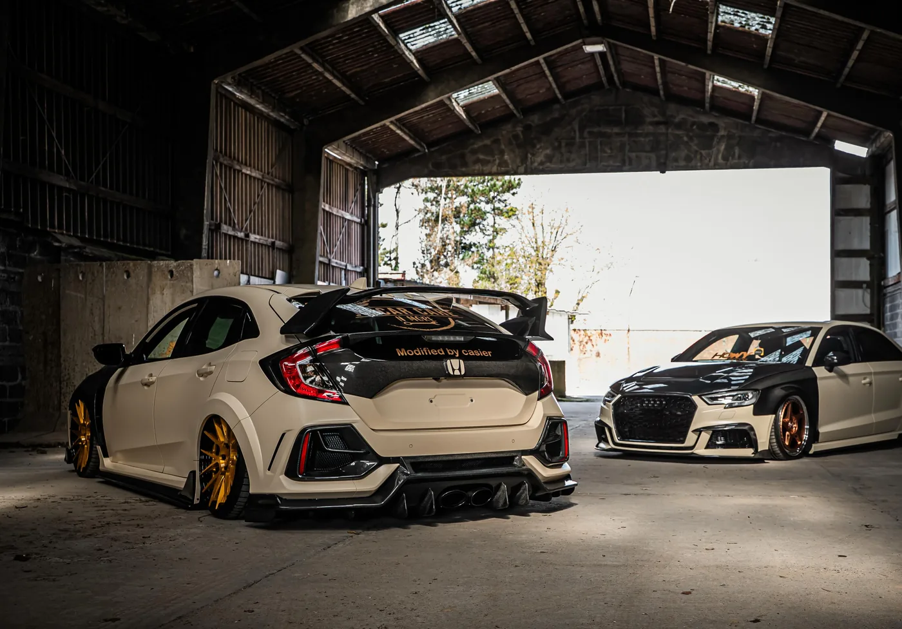
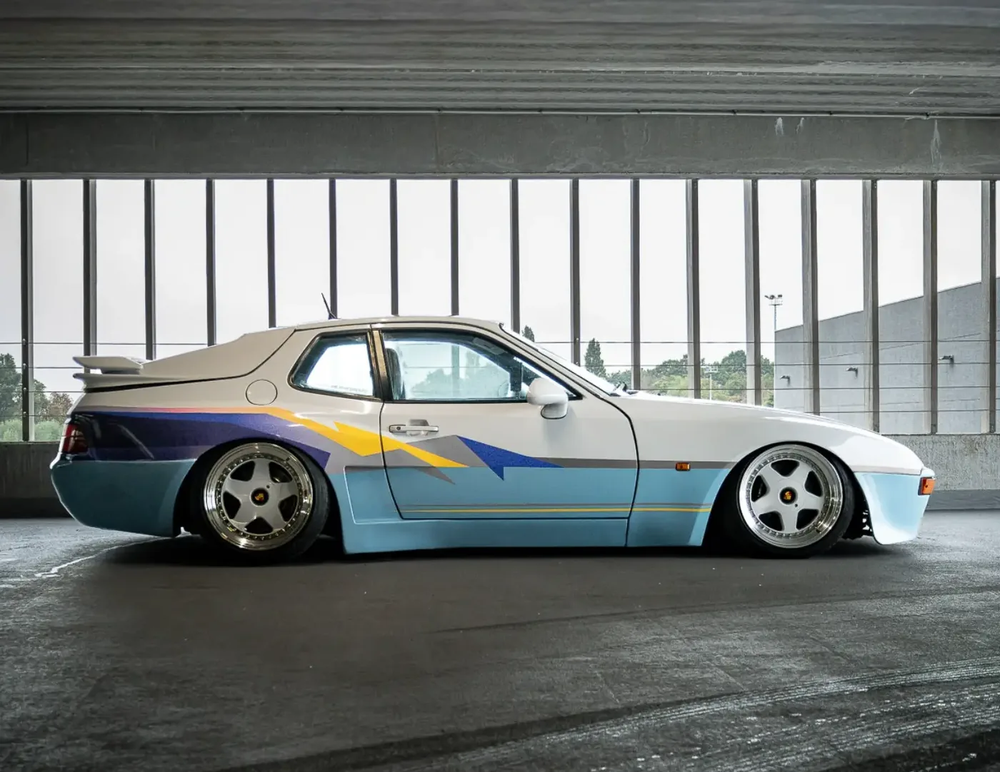
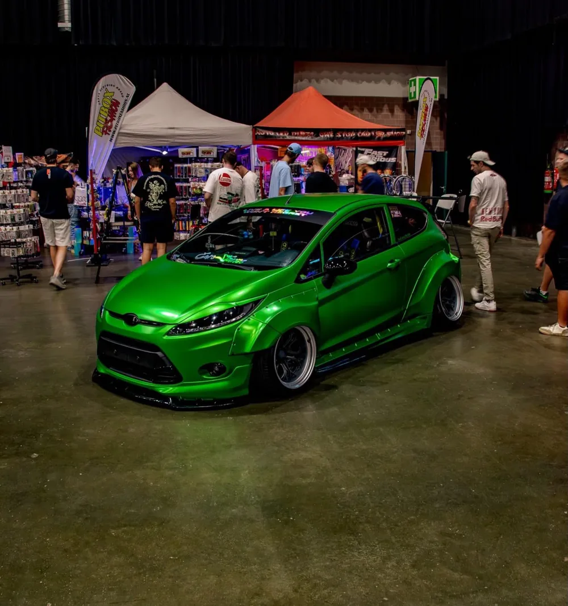
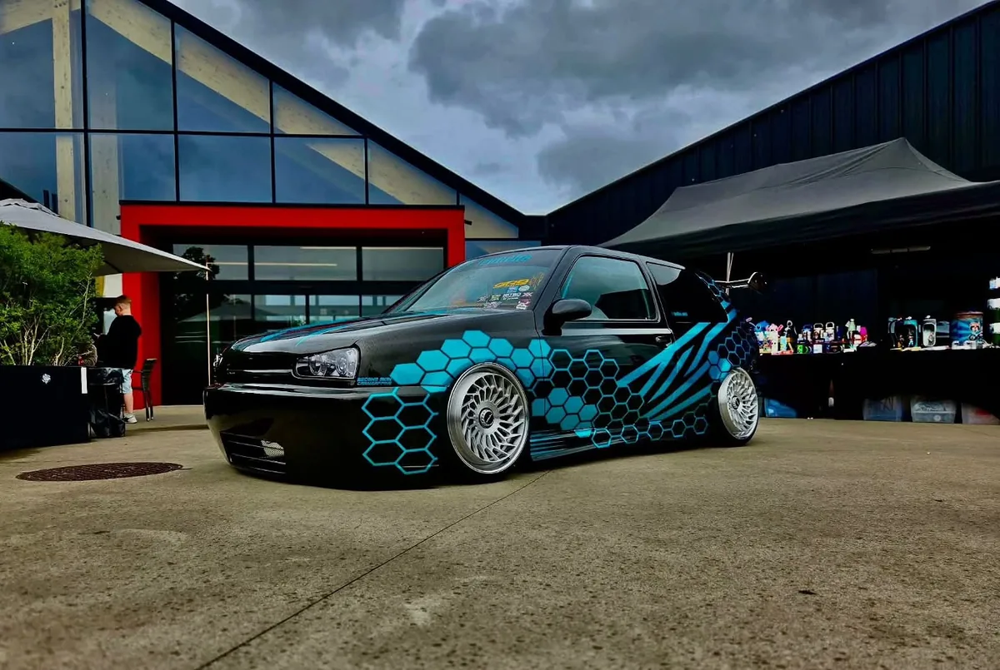
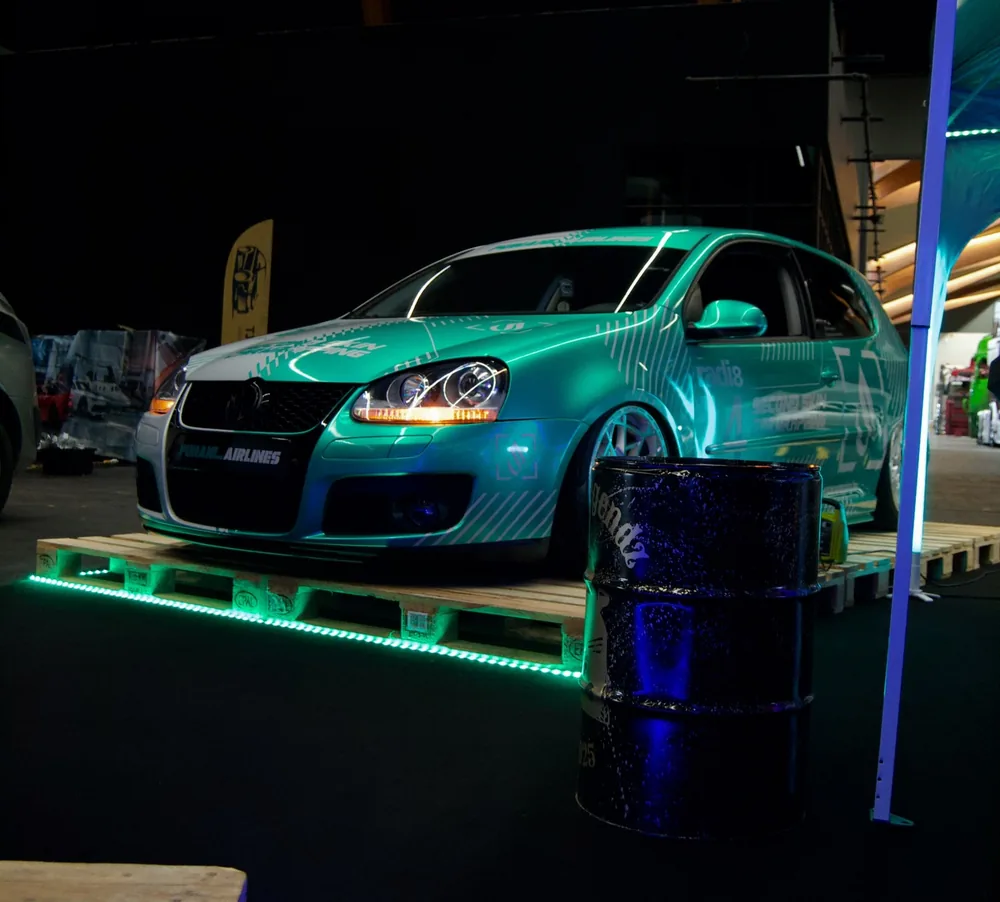
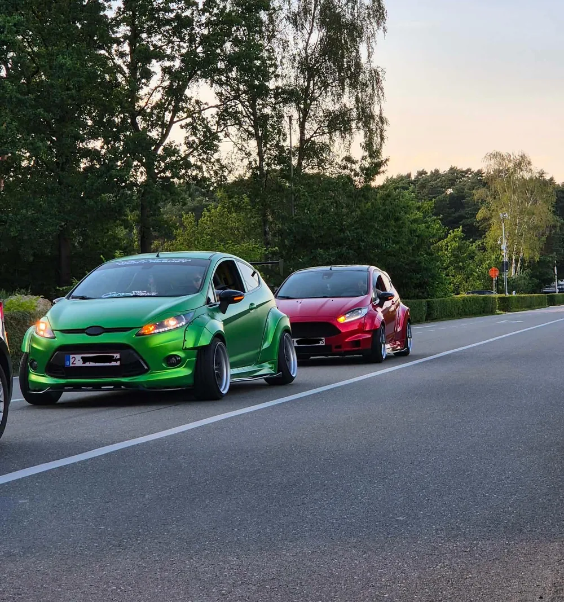
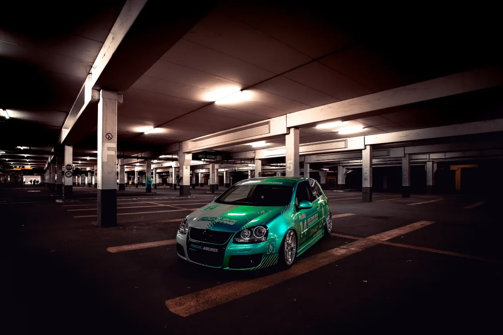
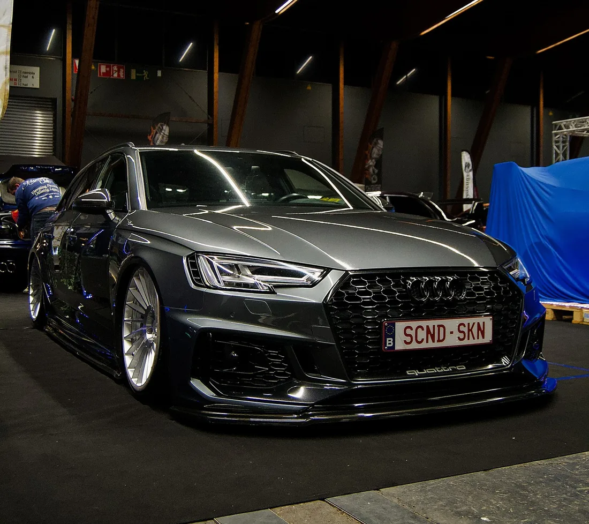

WrapCouple goals
Een Civic Type R en een Audi S3 van een koppel uit de scene. De wrap kwam van ons.
Foto: @howygraphxEen nieuwe kleur, een custom livery voor de show of een strakke belettering voor je bedrijfswagen. De folie geeft je auto een unieke look, en beschermt de lak eronder.

Carwrapping is onze grote specialiteit. Maar je kan bij ons ook terecht voor de kleinere dingen die je wagen afmaken.

Een volledige kleurwissel in mat, satin of gloss. Uit een breed kleurenpalet, met lichten, logo's en spiegels netjes gedemonteerd.
Vraag je prijs
Strepen, patronen of een volledig eigen design. Voor de straat, de meet of het circuit, zo opvallend als jij wil.
Vraag je prijs
Grills, dakrails, logo's en lijsten in glanzend of mat zwart. En een licht verduisterende folie over je lichten, die ze meteen ook beschermt.
Vraag je prijsJe bedrijfswagen of aanhangwagen die opvalt. Lever je eigen ontwerp aan of laat het tekenen door onze grafisch vormgever. De snijplotter staat bij ons in huis.
Bespreek je projectEen goede wrap begint lang voor de eerste folie erop gaat. Daarom nemen we eerst rustig de tijd om alles samen te overlopen.

Van Lowered Ink bij Tattoo FX in Waregem tot de meets van Petrol Brothers: onze wraps rijden overal rond. De mooiste foto's komen van de fotografen uit de scene.
Volg @secondskincarwrapping
WrapEen Civic Type R en een Audi S3 van een koppel uit de scene. De wrap kwam van ons.
Foto: @howygraphx
CoverEen volledige cover, op Radi8-velgen.
Foto: @julien_michelphotography
Achter Second Skin staat Lucas Dumont. Zijn eigen Porsche 924 met retro livery staat geregeld op de meets, dus hij weet als geen ander wat een wrap moet kunnen.
Klanten rijden van ver om hun wagen hier iets unieks te laten geven. Wat je ook in gedachten hebt, Lucas zegt je eerlijk wat goed zal staan en wat beter niet.
Deze man weet exact wat hij doet, geeft eerlijk advies van wat wel en niet doen. Zijn werk is uitmuntend en professioneel. Goede afspraken die dan ook waargemaakt worden.
Net chrome delete laten doen aan mijn Mercedes, vriendelijke ontvangst en een perfect resultaat. Zoek niet verder prijs kwaliteit Top !
Machtige resultaten! Doet enorm zijn best om alles zo goed mogelijk te laten uitkomen! dikke aanrader!
Stuur je merk, model en wat je in gedachten hebt. Lucas maakt vrijblijvend een prijs op, en voor bedrijven met meerdere wagens per maand is er een voordeeltarief.
Ik maakte deze demo voor jullie om te tonen wat er kan. Na een kort gesprek maak ik er iets veel persoonlijkers van, helemaal naar jullie wens.
Vrijblijvend. Ik kom langs of we bellen.
Op maat, op jullie eigen domein.
Geen voorschot. Jullie betalen pas als alles klaar is.
Hosting, domeinnaam en kleine wijzigingen, zoals nieuwe openingsuren.
Omdat een voorbeeld meer zegt dan een mail. Zo zien jullie meteen wat er kan, en het kost jullie niets.
Nee. Het gesprek is vrijblijvend. Vinden jullie het niks, dan is het daarmee gedaan.
Na ons gesprek staat jullie site binnen 10 tot 14 dagen online.
Zeker. Jullie domeinnaam kan gewoon blijven, de nieuwe site komt in de plaats van de oude.
Nee, dat doe ik op basis van ons gesprek. Eigen foto's zijn mooi meegenomen, maar niet nodig om te starten.